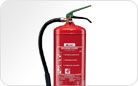
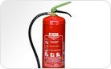
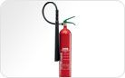

Brandblussers
Brandblussers spelen een belangrijke rol in de brandbeveiligheid, want meer dan 85% van de branden wordt namelijk met een draagbaar blustoestel geblust. Daarom schenkt Actief Brandbeveiliging B.V. aandacht aan de betrouwbaarheid en onderhoud van haar brandblussers.
Schuimblussers

Actief sproeischuimblussers zijn van een zeer hoge kwaliteit en hebben een uitstekende bluscapaciteit. Schuimblussers zijn inzetbaar voor het blussen van vaste stoffen en vloeibare stoffen. Schuim veroorzaakt aanzienlijk minder nevenschade aan apparatuur en producten in de directe omgeving dan een poederblusser. Schuimblussers zijn met name geschikt voor kantoren, openbare gebouwen, winkels, maar ook voor industrie doeleinden.
Schuimblussers zijn verkrijgbaar in 2, 3, 6 of 9 liter uitvoeringen.
De 3 liter schuimblusser is tevens geschikt voor het blussen van frituurvet (klasse F).
Actief S-6-DLWB 6 liter sproeischuimblusser
Actief S-6/9-DLWB
- Constante druk blusser
- Geschikt vooor de brandklasse A en B
- Leverbaar als 6 of 9 liter blusser
- met manometer
Actief W-3-DFC
- Geschikt voor het blussen van 75 liter frituur vet
- Constante druk blusser
- Geschikt vooor de brandklasse A, B en F
- met manometer
Poederblussers

Actief poederblussers zijn van een zeer hoge kwaliteit en hebben een uitstekende bluscapaciteit.
Poederblussers zijn universeel inzetbaar voor het blussen van vaste stoffen, vloeibare stoffen en gasbranden(brandklassen A, B en C) en tevens inzetbaar bij zowel hoge als lage temperaturen. Het blussen van onder spanning staande apparatuur levert geen gevaar op. Rekening moet echter worden gehouden met de nevenschade van bluspoeder op elektronische en fijnmechanische apparatuur. Poederblussers zijn met name geschikt voor buitenlocaties, industrie, opslag, werkplaatsen, pompstations etc.
Poederblussers zijn verkrijgbaar in 1, 2, 6, 9 of 12 kg uitvoeringen.
Actief PD-6-GA 6 kg poederblusser
Actief PD-6/9/12-GA
- Constante druk blusser
- Geschikt vooor de brandklasse A, B en C
- Leverbaar als 6, 9 of 12 kg blusser
- met manometer
Actief F1/2GM
- Constante druk blusser
- Geschikt vooor de brandklasse A, B en C
- Leverbaar als 1 of 2 kg blusser
- met manometer
- één hands bediening
Koolzuursneeuwblussers

Actief koolzuursneeuwblussers zijn van een zeer hoge kwaliteit en hebben een uitstekende bluscapaciteit. Koolzuursneeuwblussers (CO2 blusser) zijn inzetbaar voor het blussen van elektrische installaties, ruimtes waar kostbare apparatuur staat, vloeistof branden en ruimtes waar schade aan levensmiddelen moet worden voorkomen (HACCP).
Koolzuursneeuwblussers zijn verkrijgbaar in een 2 kg en 5 kg uitvoering.
Actief KS-5-ST 5 kg Koolzuursneeuwblusser
Actief KS-2/5-ST
- Stalen cilinder
- Geschikt vooor de brandklasse B
- Leverbaar als 2 of 5 kg blusser